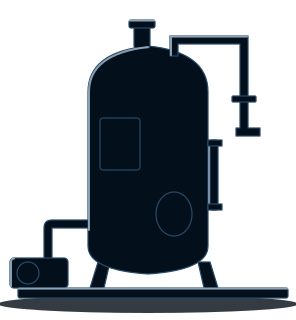
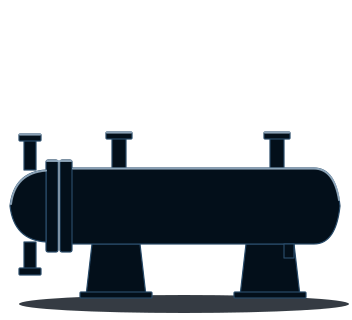
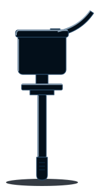

MSP 1500-E
Autoclave ETO
Câmara de 1500 L em aço inox 316L, com dupla porta guilhotina vertical.
Ver o modeloAutoclave, gerador de vapor, aquecedor de gás e psicrômetro: os equipamentos de um ciclo ETO, projetados e automatizados pela AFR e qualificados pela LabQuali.
Conhecer a linha
Quatro equipamentos, um ciclo de esterilização. A autoclave abre a linha; os outros três ganham página própria quando os modelos estiverem prontos.
MSP 1500-E
Câmara de 1500 L em aço inox 316L, com dupla porta guilhotina vertical.
Ver o modelo
Em breve
Produz o vapor que umidifica e condiciona a carga antes da entrada do gás.

Em breve
Vaporiza e aquece o óxido de etileno líquido antes de ele entrar na câmara.

Em breve
Mede a umidade relativa durante o ciclo e entrega o valor em sinal de 4–20 mA.
A AFR e a LabQuali projetam, desenvolvem, automatizam, qualificam e validam os equipamentos MARSP.
As duas empresas atuam juntas do projeto ao start-up. O cliente recebe equipamento, automação e documentação de qualificação em um pacote completo.
Escreva para a LabQuali dizendo qual equipamento interessa e onde ele vai operar.